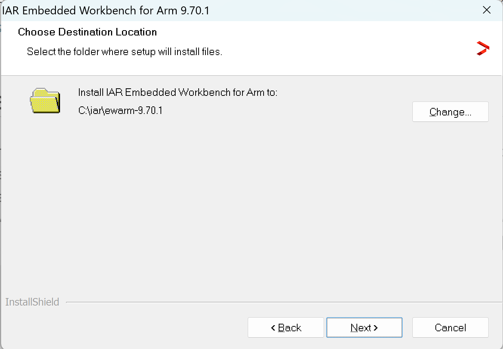
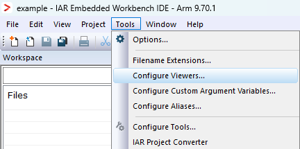

- Note
- The steps on this page need to be done once on a given host machine
Download IAR Embedded Workbench
Install IAR Embedded Workbench
- Install IAR Embedded Workbench 9.70.1 by double clicking the downloaded installer file ewarm-9.70.1.exe.
- Follow the steps and at below screen, recommend to keep install directory as default.

IAR Embedded Workbench Install Path
- Follow the installer instructions until the installation is complete.
- Once installation is completed, Launch IAR Embedded Workbench IDE.
- To configure your IAR License, navigate to the Toolbar, then select
Help > License Manager
Configure Sysconfig to IAR Embedded Workbench IDE
- Navigate to
Tools > Configure Viewers
- Click the Import button
- Navigate to SDK directory
- Select the configuration file located at
{SDK_INSTALL_PATH}/tools/iar/sysconfig_iar_setup.xml
- Click OK to save changes

IAR Configure Viewer
Setup IAR EW
Known Issues
IAR Embedded Workbench Does Not Support GEL Scripts
- IAR Embedded Workbench does not natively support the execution of GEL scripts. These scripts are used by Code Composer Studio (CCS) to initializing SOC, clocks and other registers during the startup of debugging session.
Workaround - Use SBL NULL for device Initialization
- Flash the SBL NULL binary to the target board before loading your application program or starting the debug session.
- The SBL NULL bootloader performs essential device initialization steps similar to what a GEL scripts do.
- Refer SBL NULL
Debugging Multi-core Projects Using the XDS110 in IAR
- IAR Embedded Workbench lacks built-in support for loading and simultaneously debugging multi-core processors when using TI's XDS110 debug probe.
Workaround - Use Code Composer Studio (CCS) for Loading and Debugging
- The most recommended solution is to use Code Composer Studio (CCS) for the loading and debugging, even if you prefer to build your multi-core projects in IAR.
- Build your multi-core project within IAR Embedded Workbench to generate the executable output file (
.out).
- Switch to Code Composer Studio to load
.out file onto the target device.
- Refer Load and run example binaries in CCS
 1.8.20
1.8.20